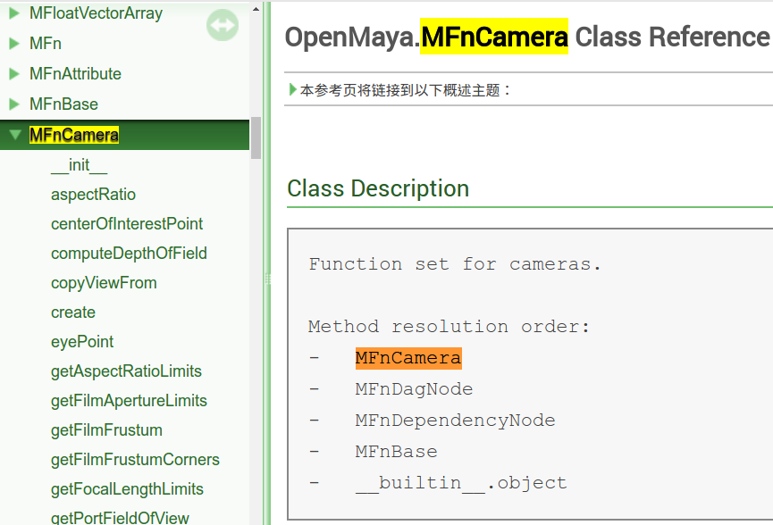

前言
Manipulating Objects
這個章節將會實際用undoable command 來creates and manipulates a camera。
專案流程
Source Code
pySampleCameraCommand.py
詳情請看程式說明
Run Maya’s Script Editor
在maya的python command輸入:
|
|
載入pySampleCameraCommand.py到maya Plugin中
程式說明
Plug-in
redoIt()
在這個程式中，我們呼叫MFnCamera.setTranslation()來改變camera的transform node位置，其原理如下。
Maya有很多Objects，要操作他們就要透過Function Sets。
所以有兩個名詞我們應該要先了解。
Maya Objects (MObject)
Maya API透過MObject wrapper class的方式來存取Maya objects。
所以這個Instances of MObject可以代表cameras, lights, meshes, transforms, and dependency graph nodes，這些在Maya的objects。而MObject的內部狀態則是由function set (classes derived from MFnBase)來操作，而上面說到的不同種類的Instances of MObject分別有不同且”唯一”的Maya Object type (MObject.apiType())。
另外我們的MObject能夠被許多不同的Function Sets操作，要知道這個Function Set是不是和這個MObject相容就可以透過MObject.hasFn()。
Function Sets (MFnBase and subclasses)
用來操作與其相容的MObject物件的狀態，而Function Sets是singletons的，也就是說，一個Function Set只相容對應於一種MObject。
基本上看到MFn-開頭的就是Function Sets。MObject的function set相容性會跟隨階層的相容性，而MFnBase class是所有Function Set階層的最高層。
比方說MFnCamera這個type的MObject，因為其上層有MFnCamera, MFnDagNode, MFnDependencyNode, and MFnBase

所以MFnCamera也都會相容於他們的function sets。
///
接下來看回程式
|
|
把前面在doIt()定義過的self.cameraTransformObj，也就是被rename成’myCameraTransform’的那個，丟到OpenMaya.MFnTransform這個function set，接下來我們才能用他來操作，這邊是用setTranslation來進行移動。
下面這張圖可以更清楚知道他們的關係。
備注
Warning: Creating and Manipulating Nodes Without MDagModifier
一般我們create node像我們前面的例子是用MDagModifier，不過有些主要function sets還是有提供create()的function，像是MFnCamera.create()，不過官方建議要用這種方式create的話，儘量是在one-time-use, non-undoable commands的情況下。
不過有個例外是MFnMesh.create()，這個會在下個章節提到，其例子是用MDagModifier.createNode()創建parent transform node，然後必須使用MFnMesh.create()來定義其下child node的mesh data
此外，可以發現MFnDagNode這個function set包含了MFnDagNode.addChild(), MFnDagNode.removeChild()這種DAG hierarchy manipulation functions
同樣的，除非你要創建的是single-use, non-undoable command, or want to manually implement your command’s undoIt() logic to reverse these actions，
否則就用 MDagModifier.reparentNode()並接著加上MDagModifier.doIt()。
Warning: Node Deletion with MGlobal.deleteNode()
你可能會想在undoIt()裏面作MGlobal.deleteNode()來reverse先前的create node操作，但這樣是不被建議的！
因為MGlobal.deleteNode()其實是執行了MEL node deletion command，這樣做其實會讓Maya把這另外的command加到undo stack，這會導致Maya’s undo stack不一致性，甚至引發crash。
同樣因為上面的理由，所以我們也不建議在command plug-in中呼叫maya.cmds functions。
比較安全的選擇是用MDagModifier.commandToExecute()來把MEL command放到預備執行的queue裏面，然後在用MDagModifier.doIt()來執行。
如此一來，雖然同樣是MEL commands，我們在undone裏面就可以用MDagModifier.undoIt()來安全的reverse，這部份將會在下下個章節深入探討。